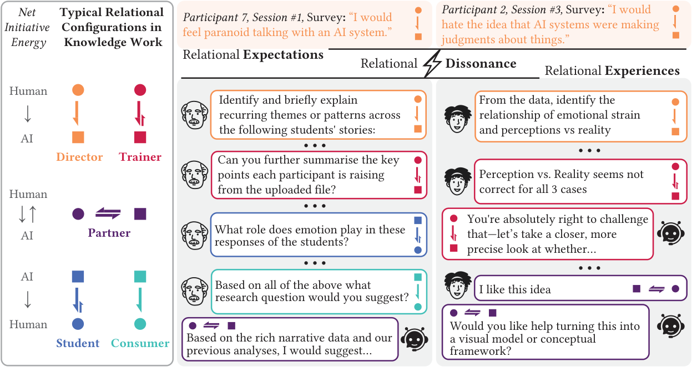
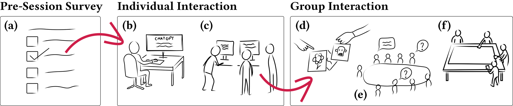
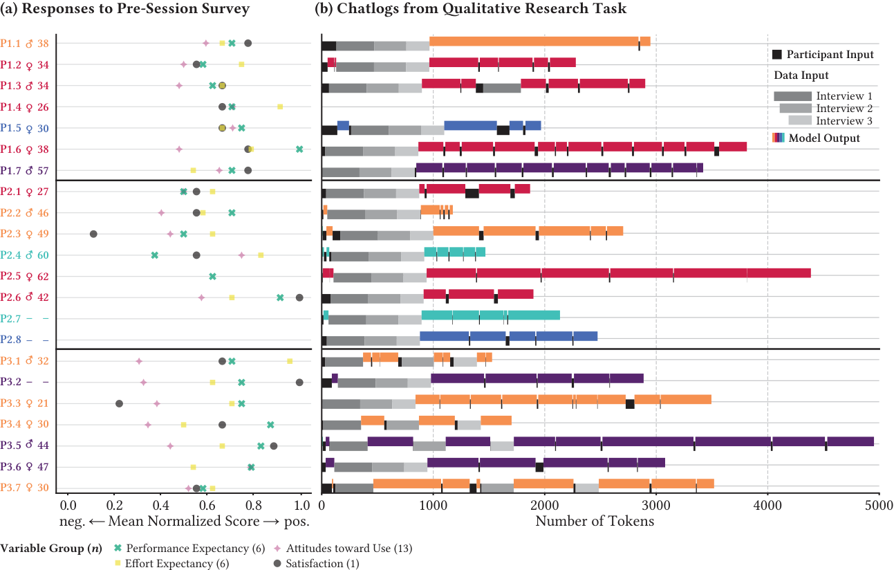
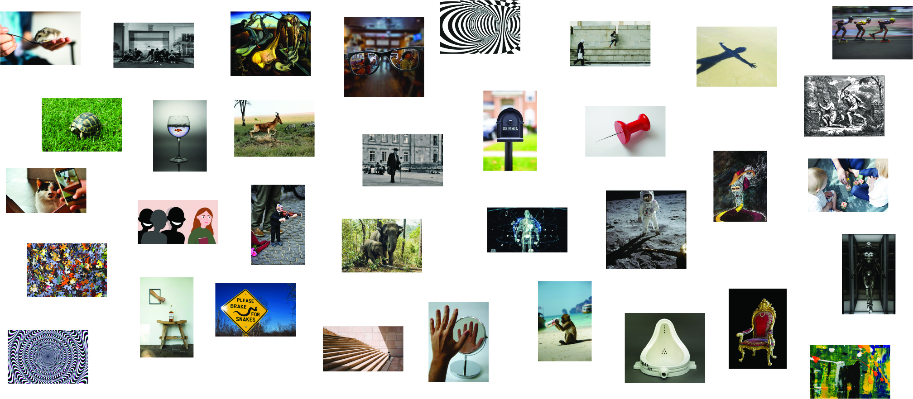
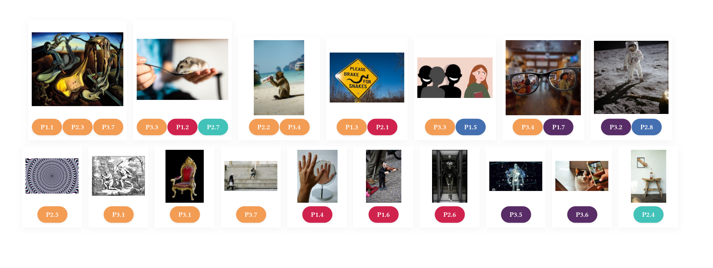

Postdoctoral Research / Aalto University School of Business
My postdoctoral research investigates the relational dynamics between humans and AI systems. As AI becomes deeply embedded in knowledge work, the nature of these interactions extends beyond usability — people form evolving relationships with AI that shape how they think, create, and make decisions. This work sits at the intersection of human-computer interaction, organizational behavior, and responsible AI design.
Through qualitative research with knowledge workers, I identified a phenomenon I call relational dissonance — a systematic divergence between how people conceptually frame AI and how they actually engage with it in practice. This research revealed five distinct relational configurations that people adopt when working with AI tools:
This work was accepted at CHI 2026, the premier international conference on human-computer interaction.


Building on the theoretical insights from the Relational Dissonance research, I am developing the Relational Transparency Layer (RTL) — a prototype desktop application that surfaces relational patterns in human-AI interaction in real time. The system uses a two-model architecture with local LLM inference to analyze interaction patterns and generate a relational timeline, helping users reflect on how their relationship with AI evolves over time.
The RTL prototype was submitted as a demo to DIS 2026 (ACM Designing Interactive Systems Conference).


This research program is organized around three interconnected pillars:
This research is supported by the Jenny and Antti Wihuri Foundation (~150,000 EUR) and the Foundation for Economic Education (LSR) (16,000 EUR).